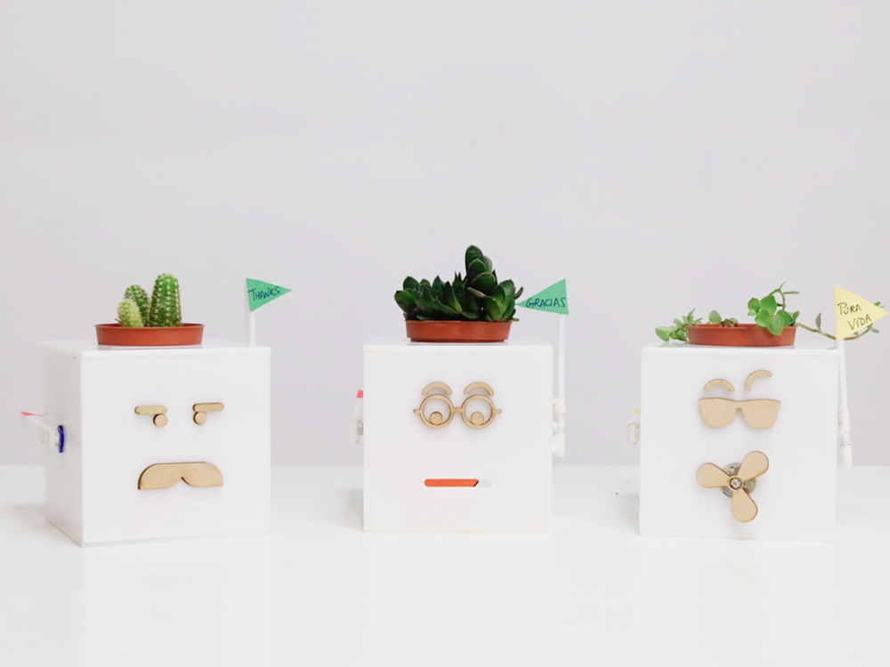
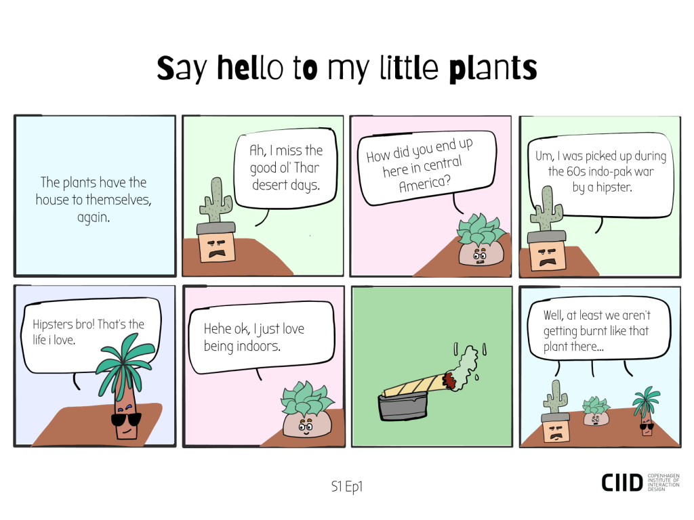
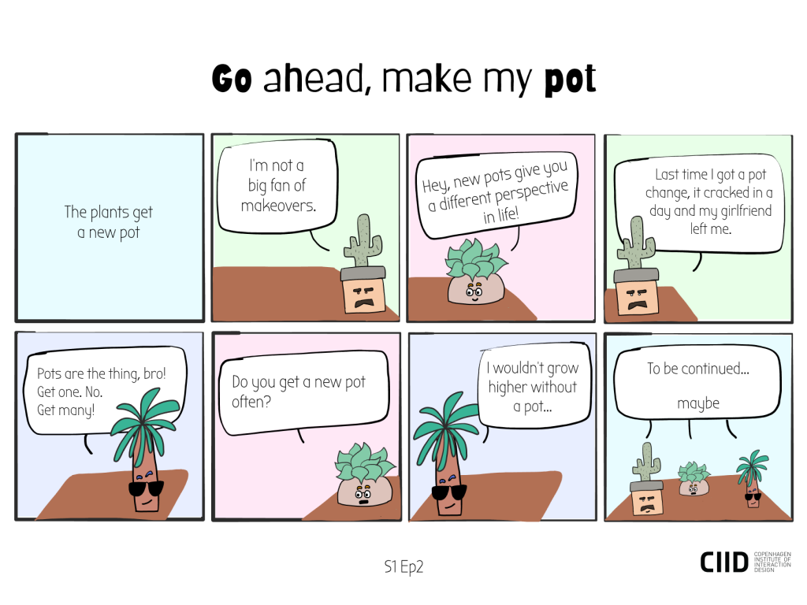

Internet of Plants
Two studies published in 1983 demonstrated that willow trees, poplars and sugar maples can warn each other about insect attacks. Since then, numerous studies and research have confirmed the science of plant communication. From releasing volatile organic compounds into the air when insects attack to using roots to communicate with each other, plant communication has been debunked but still the awareness about this isn’t strong.
Internet of Plants (IOP) is a light hearted project based on the idea of plant communication with the aim to educate and spread awareness about the subject.
The Concept
To communicate this idea of IOP better, we created The Plant Lounge. It’s about three house plants communicating with each other and having conversations about their quotidian routines and each plant trying to help one another. The Plant Lounge has three main characters – a cranky cactus from the deserts of India, a shy succulent from the deserts of Namibia and a frivolous fern from the rainforests of the Amazon, each having a characteristic ‘superpower’ of their own. The cactus has the superpower to withstand really harsh temperatures, the succulent stores moisture and releases water as its superpower and the fern blows wind.
To further strengthen this idea of plant communication, the team also created a series of mini comic book episodes. The inspiration for this came from the fact that humans have always used drawings (from cave paintings to comic books) to communicate the idea of conversations between people, animals, objects, etc.
How It Works
To demonstrate the concept, we linked the idea of plant communication to global warming and as an attempt to raise awareness to the issue of climate change. The cactus, the succulent and the fern are attached with sensors and motors which respond when the temperature nearby is increased. The cactus catches fire – which is shown by a rolled up piece of paper that lifts up when the heat crosses a certain threshold level, the succulent helps the cactus (albeit unsuccessfully) by sprinkling water – demonstrated again as a rolled up piece of paper that is attached to a motor which unrolls after a certain value and the fern saves the cactus and the succulent by blowing wind – a fan that is connected to a motor. Hence, making all the plants ‘talk to each other’.
The Technology
Internet of Plants is built using three Arduino Nano 33 IoT. The three Arduinos communicate over Wi-Fi with each other using a cloud based server called PubNub. The PubNub API helps to transmit and receive data instantly.
Connected over a ring network topology, the cactus is fit with a temperature sensor, the fern has a wind sensor and the succulent uses a moisture sensor. Each connected with a motor that works when their respective sensors cross a certain value.